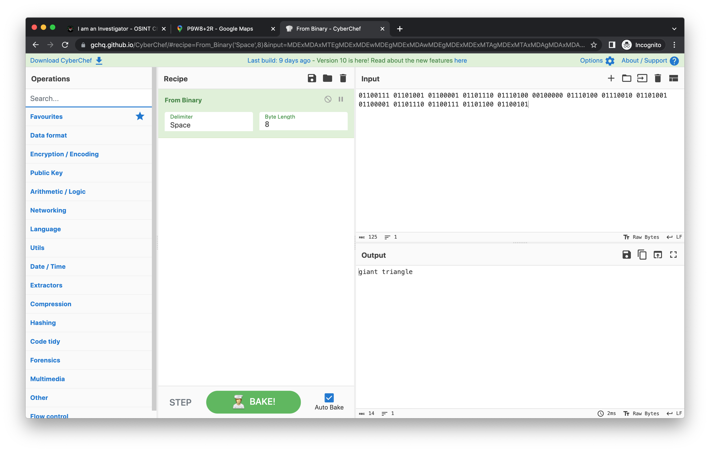
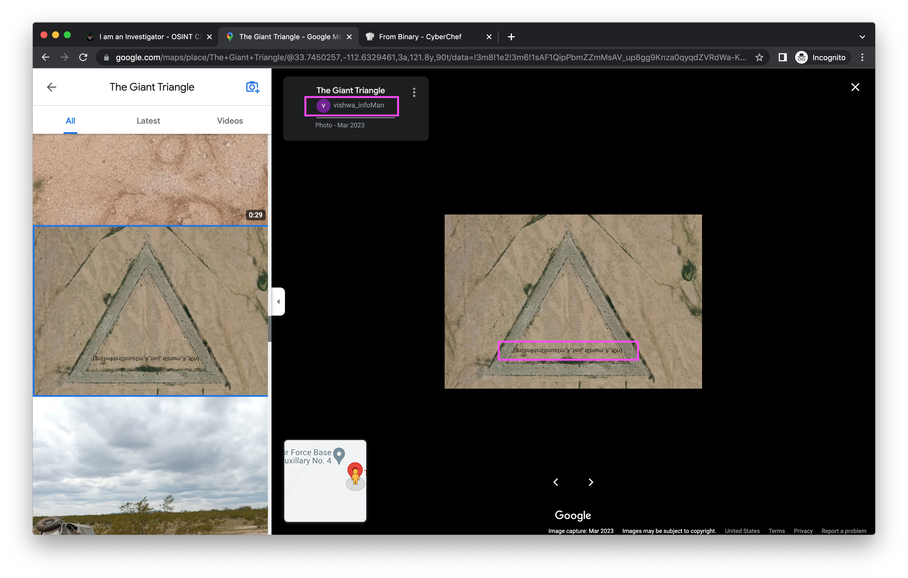

VishwaCTF 2023 Writeup
Writeup by: footpics4sale of OnlyFeetCTF: https://vishwactf.com
I am an Investigator
Category: OSINTDifficulty: Medium
DESCRIPTION
Our CrimeBranch is investigating the following crime. We cannot afford to visit the crime scene IRL, please help us.FLAG FORMAT
VishwaCTF{}
FILE
RealFirst.png
Writeup
The provided file gives this error:Opening the file in a hex editor shows that the first four bytes
don't match what would normally be used for a PNG file:
The file signature (aka magic
numbers/bytes) for a PNG file should be:
89 50 4E 47 0D 0A 1A 0A
The image can now be viewed:

To get the latitude and longitude, I used https://pixelcalculator.com to convert pixels to
cm:
- Latitude: 52.37
- Longitude: 5.2
Entered these coordinates in Google Maps and we're placed in a
parking lot in Almere, Netherlands:
Couldn't find anything about a crime or anything hinting about the CTF
challenge in the surrounding markers so I tried to find other clues in
the image RealFirst2.png.
There wasn't anything useful in the metadata but the
strings command shows this:
Googling the coordinates and "dock murder" provides these
results:
The first result is an article with coordinates close to 52.37,
5.2:
The Google Maps link in the article places us next to a marker for
Beatrixpark Dock. This is where we find a review from
"vishwa_crimebranch" saying they use the same username on
Instagram:
The Instagram account has one post:
The Google Drive URL (https://drive.google.com/file/d/1Ze24yj4dCmcEVqQe_dOcxnBS5D-0Sqp4/view?usp=share_link)
is for a video file named "Evidence-Shredded_Page.mp4":
I used exiftool to check the file's metadata and notice
the following comment:
On https://ezgif.com there are a bunch of different
tools that can be used on gifs. I used the "Video to GIF" tool and the
"Split" tool to view the entire message of the video.
The following information is provided:
- P9W8+2R Wittmann, Arizona, USA
01100111 01101001 01100001 01101110 01110100 00100000 01110100 01110010 01101001 01100001 01101110 01100111 01101100 01100101- CyberChef converts the above binary to "giant triangle"
- The Google Translate app detected the other characters as Sanskrit
basically saying:
- "As an explorer, you'll find what you want. Also check out the review site to see what people have said about hte site, and you can see my summary acknowledgement uploaded."

There isn't anything besides the photo displayed at "P9W8+2R Wittmann,
Arizona, USA" on Google Maps. Even though it says there are "9 photos",
I could only see the one.
Because of the binary hint "giant triangle", I viewed the marker
named "Perfect Triangle West of White Tank...". The two reviews did not
have anything related to the challenge.
I did notice a new marker named "The Giant Triangle" show up after the
"Perfect Triangle" one was selected:
Again, recent reviews for "The Giant Triangle" did not have anything
BUT there is something hidden within the images.
The flag is in an image uploaded by "vishwa_infoMan":

Flag:
VishwaCTF{n0t_4_murd3r_just_4_m1sund3rst4nd1ng}